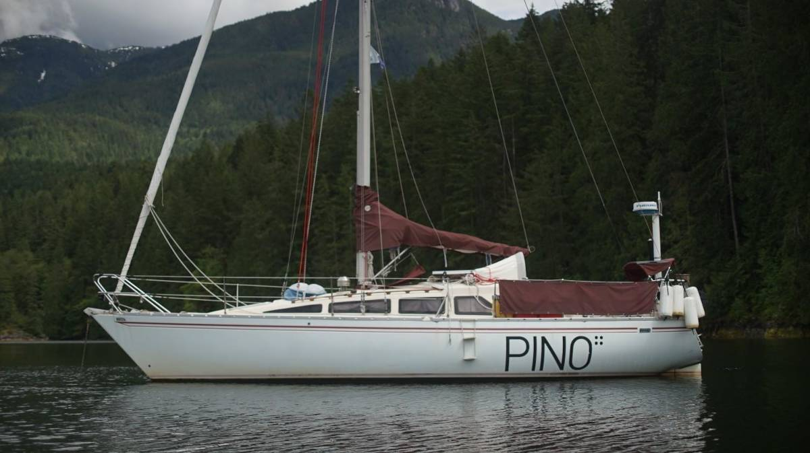

curve of time
To Desolation Sound and the Broughtons
On May 8th 2022, we were ready to leave the dock for the winter, but that same morning the house batteries failed. They had been a problem for some time, and we had hoped to switch the batteries in North Saanich. In 2019, when we left the boat alone for 6 months, the battery plates went dry (housebank). They performed okay after that, but became paratistic... preying on the rest of the system (we liked to use both the starter and house together, as a big house battery). And so, we removed the dead house batteries, and put the starter bank in their place. On our boat, both sides are exactly the same, and the starter was in a better state. We left early the next day, lucky for us weather and tide conditions were favorable.
We cranked the engine, and it started right away, no issues. We motored outside of the Ogden Point breakwater, raised the sails, turned the motor off, and let the wind carry us. The wind was coming out of the west at the time. We passed through Enterprise Channel, then turned northward toward Cadboro Bay. We were going 5-6 knots, and breezed through Baynes Channel. The wind turned to the south then, and picked up speed as we went around the corner. We had aimed to go between James and Sidney Island, but the waves behind us seemed to be getting bigger, less comfortable for a downwind sail, and so we passed between the mainland and James Island, squeezing throught the sandspit, sailing around the numerous crab pots in the area. We expected the wind to calm after passing James Island, that we'd have a smooth ride to North Saanich, but the south wind funneled between the two islands and then we had 25 knots at our backs. We were under a full main at the time, and regretting not putting a reef. The ride was boisterous, and not entirely welcome at this point... we were both tired of getting tossed around. The weather always seems to take a turn for the worst when we are moments away from arriving to our destination. We moored onto the North Saanich reciprocal dock. A big motor boat arrived shortly after, we saw them trying their hardest to moor onto the dock we were on, but they couldn't get near because of the wind. Their boat had too much vertical surface. Eventually, they made it on, with our help.
There was a gale forecast for the next day. The wind whistled through our rigging. We went inside the workshop to finish up a few projects, like sanding and re-varnishing our dinghy oars, and cutting condensed wood bricks for our little stove. Our woodstove woodbox is 9x9, and most logs are much bigger than this. Using a handsaw, wood scissors, and a hammer, we were able to cut the log into even, thin discs. Devine decided to order us a crank for the engine, and so we would have to stay in the area for a week to wait for it. We also realized that the float for our diesel tank was broken. We thought the fuel gauge was to blame, but when we opened the tank we saw that the little arm had broken free. We have not yet replaced it, we'll instead keep re-fuelling a little at a time to make sure it is topped up. We never fill the boat up at the pump, we think it safer to use Jerry cans, and to siphon the contents from can to tank through a screened funnel. The siphon and funnel make it hard to cause a spillage, the transfer of fuel is slow, and if we keep our ear to the opening we can hear it filling up and know when to stop.
We sailed to Prevost Island, and moored onto our friend Kay and Rik's mooring buoy. They have a small cottage on the island, and use the mooring when they come and visit. On the first day we saw two seals fighting in the water, making a terrible racket. During our stay there, another gale came powering through the area, a rather big one for the time of year. Both of us couldn't sleep, or think, it is difficult to relax when the seas and winds are going crazy.
We returned to North Saanich to pick up the crank. Upon arriving in Tsehum Harbour we noticed a boat anchored in the middle of the channel, near one of the large concrete markers. The storm had caused it to drag, and the owner had not bothered to move it. This happens often in the area. The sea floor in Tsehum harbour is terribly fouled, with old moorings, garbage and crab pots, it is a literal underwater garbage dump. It is likely that our anchor would snag on something, and drag during big weather, but even so... the harbour is so filled with moorings that finding a spot too would be difficult. Anchoring in a mooring field is a recipe for disaster. We've done it before, but it is only advisable in light winds.
We went to fill up on diesel, filling two Jerry cans. The price of fuel is still very crazy right now, I don't know how motor boats manage it. We can always depend on the wind for propulsion, but a motor boat has no alternative. It cost us 90$ for two 20 L bins, it used to cost us 60$ for the same amount. We will use it sparingly.
The reciprocal dock we usually used to step ashore was full, and so we booked a spot with the marina, not ideal but we really wanted to pick up that crank. We also visited some friends, and filled up with more food before leaving to go north. Fairway Market in Sidney is the only place we found that has wasabi powder. We hate buying the paste, it is so strong that it lodges in your throat and makes your eyes water and then you cough and cough until you think you can't breathe. By contrast, the powder produces a smooth, flavorful paste, that isn't overly strong. We had freshly grated wasabi while in Japan, it doesn't taste nearly as strong as that paste... it is actually rather sweet, it doesn't taste like pain.
Pino and crew sailed on to Galiano Island under good wind. When we leave North Saanich we always go through the pass between Goudge and Coal Island, and then on between Knapp and Pym Island, bringing us to the west side of Portland Island. We have found the current to be manageable here. Even with a flooding tide, some of the other passes move the water differently and it is possible to encounter a strong opposing current. Navionics doesn't always list these currents, it is best to always look at a chart first to see them. A chart will mark any significant current by way of arrows. For a small boat, a chart listing half a knot of current can still be helpful.
It is rare to find good wind in Satellite Channel, but it carried us all the way around the bottom end of Saltspring Island. We listening to the radio while ghosting along, keeping an eye out for ferries. The wind died halfway up Captain Passage, but we found some wind once past Prevost in Trincomali Channel. Because it was the end of a long weekend, we saw many boats leaving our planned anchorage. This always makes us happy, we like arriving to a place where there are fewer boats. We anchored in our usual spot in Montague Harbour, at the south eastern portion of the bay, near the mooring field.
While there, we met up with a local and took a walk together around the Montague Harbour Marine Park. We stayed for two days, waiting for favorable wind to go to North Cove, at the topmost end of Thetis Island.
The wind was out of the south east, 10-20 knots. We sailed downwind for a few short hours and turned into our planned anchorage. We had never come here before, it is a rather large bay. Instantly, we were greeted with seals, their burping and barking echoing throughout the bay. Because the wind was coming out of the southeast, the wind does funnel between the land and it can get pretty gusty, but we had ample scope and ample room. Later, two other boats came to anchor nearby.
The next day, we got up at 5h30 am and motored for 2 hours to make it to Dodd's Narrows. The last time we went through this pass was in 2016, on our first ever visit to Nanaimo. Slack tide was at 8h35, and we made it exactly at that time, transiting over calm waters. Northumberland Channel opened onto us as we exited Dodds, it is a long channel, and feels especially long when there is no wind. We watched tugs moving log booms along the shore, it kept us distracted. Then we turned past the south end of Protection Island, and went to find a spot at the dock at Nanaimo Yacht Club. The visitor dock is on the outside of the breakwater and very exposed to south winds, but the harbourmaster found us an empty berth inside and we are glad of it, because the next day the waves and wind came up and had we stayed, we would have regretted it. We can stay at the YC for free for a night, and subsequent days are fairly cheap. While here, we worked on a sign language version of Uxn. Nanaimo isn't our favorite place to stop at, there is good walking along the waterfront but the path is often interrupted and re-diverted by the road-side. Many areas are run down, too, seems worse than the last time we were here. We waited out some bad weather, and waited for wind to cross to Secret Cove on the Sunshine Coast.
We found our window, but the wind was coming out of the Northwest, forecast to be 15-20 knots. We sailed, close-reaching, at a good pace. The waves in the Strait of Georgia are short and steep, not comfortable when sailing near the wind. We realized a bit late that we had forgotten to close the mushroom vent in the head, and water had found its way in. It was our first time using the dry toilet when fully heeled (the wrong way) and we found some... issues with our setup. Let's just say that the deposits did not make their way into the right compartment. It looks like we may have to heave-to, or run when someone needs to do their business when heeled on the wrong side. Ah, the pains of a new system. The wind died south of Texada Island, and we motored the rest. We found a suitable anchoring spot at the southernmost arm of Secret Cove, next to the RVYC dock. This place was empty at the time, we were the only boat at anchor. We stayed here for 3 nights, reading, drawing, working on various projects. By then, our friends Dave and Karen from SY Dakota had arrived in Pender Harbour, and the next day we went up there to join them.
The sail to Pender Harbour was uneventful, and not really a sail at all. It was 2 hours away, and the wind did not bother showing up.
Pender Harbour is fairly large, with multiple anchorages to choose from. We had hoped to anchor near Madeira Park so we could re-stock on food, but the area looked very public, and busy. We later found out that people only ever anchor here when the rest of the bays are full, because it is not a pleasant place to be. We went into Garden Bay, thinking that we could row back to the store from here, and saw Dakota there at anchor. We had read that the sea floor here doesn't offer great holding because there is too much boating activity, too much anchoring over a long period of time have have turned the mud and loosened it. We put out extra scope, and did not worry too much because the winds were calm. Dave and Karen offered to tow us to the dinghy dock so we could stock up. We could have rowed, but it is also nice to have a lift every now and then, especially when carrying lots of groceries. Our dinghy rows well, but less so with extra weight (the dock was about 1 nm away from our spot in Garden Bay). We sorted our recycling and garbage on shore, surprised to find that they bothered to separate everything here, Victoria doesn't. Having to separate all the different types of cans, and plastics, reminds me of Japan. Walking to the IGA took 5 minutes, taking a shortcut through a park. On the dinghy ride back, Dave bumped a sunken barrel in the water, we towed it to shore and heaved it up on the dock. I don't like to think about all the debris in the water, hitting a barrel with our keel would not be very fun.
On the day we set out to leave to go to Texada Island, came heavy, heavy tropical-style rain. We had barely begun lifting the anchor and all of our foul-weather gear was soaked through. The anchor was well set in mud, and it took some effort to get it up. I think I hurt my back, and then Devine came to haul in the last bit and hurt their ribs. We have to be more careful. We stopped by the fuel dock in Hospital Bay to fuel up, yet again, because we figured that this would be the last place where we could get it at a good price. Although, for another 40 L, it cost us 100$ (ouch). It was raining so hard that we had to take the piece of Sunbrella covering our companion way door to cover the tanks while we filled them up. The dock had no roof, nothing shielding visitors from the weather, and we wanted no water in our stupid expensive fuel.
The wind was supposed to be 10-20 knots from the southeast, we got less than that, but sailed on slowly towards our destination at the northern end of Texada Island. When moving past the entrance to Jervis Island, there were some tide waves making a mess of things, but they settled once we got further away. Dakota is a faster boat than us, and they've got more comforts than we do (closed cockpit) and they decided to sail straight on to Grace Harbour (nearly 49 nm away). We could not have done the same. We were too wet, and too tired of being wet to keep going, and because of our current we knew that we'd only get there after dark, not ideal. We prefer to negotiate new anchorages in the day, with enough light to see rocks and other obstacles.
We found a spot on the Boating Club dock in Sturt Bay near the north east end of Texada Island. It is a bit exposed to the southeast, not directly, but the waves curl around the bay and can make it a bit bumpy. The Boating Club docks are anchored, and so they move with the waves. We didn't think the motion was too bad, plus it meant we could walk around the island. Devine's been in a 'motoring onto a dock stern-in' kind of mood as of late. Pino doesn't motor backwards all that well, the bow tends to not follow, especially with wind. There was plenty of wind that day, and I thought it less than ideal to try it then but Devine had stern-in on the brain and so we went for it, with some difficulty. The rain eventually let up, and we were awarded some sun around 1700. We walked over to Vananda wharf, reading about the steamboat that had sunk here after some big weather. A lot of people had died on that ship, employees and travelers. Some women refused to leave their rooms because they weren't properly dressed, and so they took their fashion faux-pas and children to the depths. We found a few walking trails, a marble quarry by the road side, as well as a cliff side littered with abandoned cars. We find plenty of these on the islands we've visited. Back then, people had no real way to get rid of their cars and they'd toss them anywhere they could. Their frames are still there, even if their drivers are long dead. Those old cars were meant to endure, and endure they will.